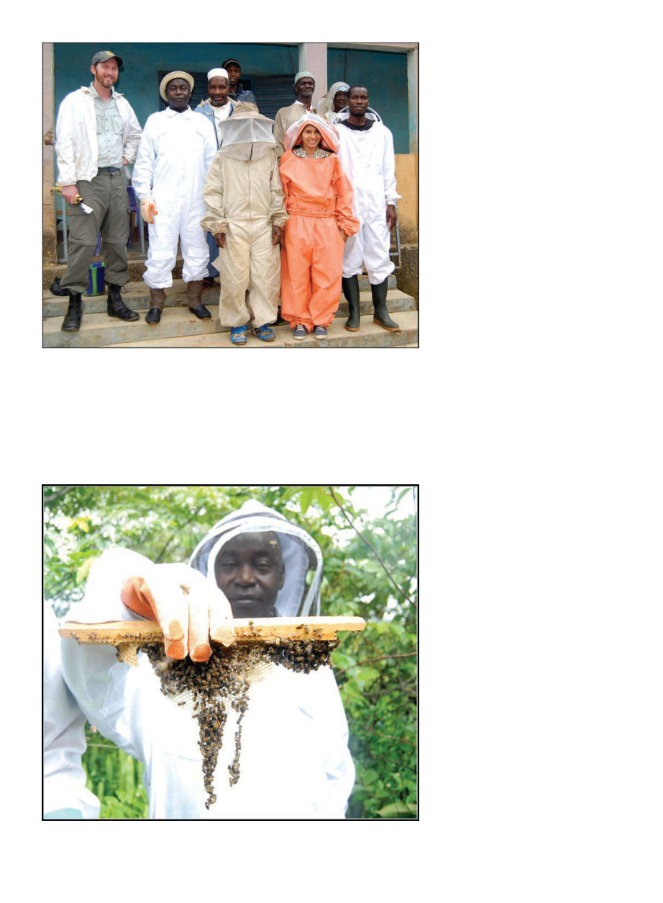

American Bee Journal
106
had little use for beeswax, often sim-
ply discarding it. So I teach them
how to make lotions and balms and
candles and … as of the third project
I was informed they were still not
significantly making or selling wax
products. Not everything is a success.
I tried to determine what obstacles
they were encountering but have not
yet been able to sort it out. If you are
in the market for completely chemi-
cal free beeswax though, I can tell you
where you can find a lot of it with no
current buyers.
The three projects in Guinea were
the first time I’ve been able to return
to the same sites in subsequent years,
and I loved having the opportunity
see the people involved in the first
project looking visibly more prosper-
ous two years later. These were also
the first projects in which I stayed
with locals in the village instead of
at a hotel. When we were done for
the day, instead of sitting alone in a
bad hotel with unreliable electric-
ity, I wiled away the hours with the
locals on the porch of the little house
we were staying in, liberated from the
expectation there’d ever be electricity.
A transistor radio kept us apprised
of the latest in the 2014 World Cup,
which everyone was following, and
the dire reports of the spreading Ebola
outbreak all around us.
Several months earlier, a two year
old boy named Emile playfully en-
tered a hollow tree in the forests of a
southern province of Guinea. Defor-
estation had driven fruit bats from a
different area into this hollow tree,
and it seems they carried the Ebola
virus. The boy soon died, followed
by his immediate family, followed
by most of his village, in a rapidly
expanding wave of death. Ebola, it
turns out, is extremely contagious by
direct contact, and once contracted,
one develops a cough, a headache, an
achy back, and there is a 66% chance
that within the next 21 days you’ll
die while bleeding out of your eyes.
There’s no cure, and it was all around
us, though not in the immediate vi-
cinity of Labé yet. It was present in
the capital, however, and my big fear
was that we’d become unable to leave
through the capital and have to em-
bark on some overland odyssey to un-
stable Mali or distant Senegal.
But meanwhile in the village of
Sanpiring, the children all ran laugh-
ing amongst the huts like a school
of minnows, the young girls sat to-
gether doing their homework, and
the adults visited their brothers and
cousins, slowly collecting together
on porches every evening. Baro Kas-
sambara, my Winrock colleague in
the field for the first project, would
slowly make tea by pouring the brew
repeatedly between a cup and kettle
as the stars came out above us and
the only light that remained was the
glowing embers under the kettle and
lightning flashing on the horizon. The
call to prayer rings out from his phone
and we all make our way by flashlight
along the narrow paths hedged in by
corn to the little village mosque. Baro
Some of the people involved in the third project, including the Peace Corps volunteer,
Monica
The interpreter for the second and third projects, Monsieur Damba